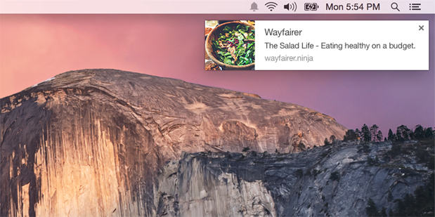
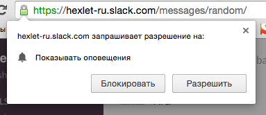

Маркетинговая компания
Маркетинговая компания
В 2015 году мир увидел новый канал общения с посетителями сайта – браузерные push-уведомления.
По своей сути — это короткие текстовые сообщения длинной до 200 знаков, которые появляются всплывающим окном в углу рабочего стола (правый нижний для Google Chrome, правый верхний для Apple Safari).
По сравнению с уже привычными email-рассылками и СМС, push-уведомления имеют ряд преимуществ.
Быстрая подписка. На сайте появляется всплывающее окно, которое запрашивает разрешение на отправку уведомлений. Один клик — и подписка произошла.
Исключена возможность отправки спама.В момент подписки за пользователем сети закрепляется шифрованный код — токен, который зависит от типа устройства, с которого был переход на сайт, браузера и домена самого сайта. Скопировать такой код или перенести на другой проект технически невозможно. Подписчик получит информацию только от того сайта, в уведомлениях от которого он заинтересован.
Высокий уровень просматриваемости.В отличии от email рассылок или SMS, которые еще нужно открыть, текст сообщения push-уведомления сразу появляется перед глазами. К тому же, воспринять информацию с него и сделать переход по ссылке гораздо проще, а значит и посещаемость сайта возрастет.
Стань одним из первых, кто будет в курсе новых новостей!